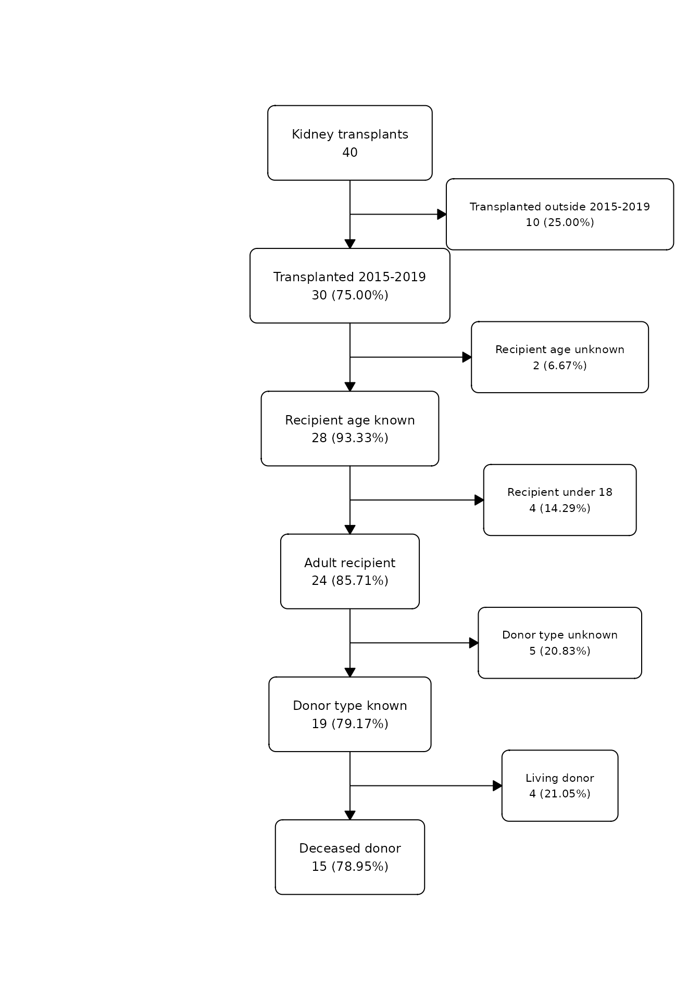

Building cohorts with flow diagrams
Source:vignettes/building-cohort-with-flowchart.Rmd
building-cohort-with-flowchart.RmdThe STROBE (Strengthening the Reporting of Observational Studies in
Epidemiology) statement asks observational studies to report how the
study population was selected, usually as a flow diagram. The flowchart
package builds that diagram while you build your cohort: each filtering
step records how many rows were kept and how many were excluded.
This article builds a small cohort from made-up rows, so it runs on
this site. On your own files, start from load_srtr_file()
instead.
Made-up transplants
Forty kidney transplants, with a few missing values of the kind real files have:
n <- 40
tx <- tibble(
TRR_ID = 1:n,
REC_AGE_AT_TX = c(rep(c(45, 62, 33, 70, 15, 58, 29, 51), 4), rep(NA, 8)),
DON_TY = rep(c("C", "C", "L", "C", NA), 8),
REC_TX_DT = as.Date("2014-07-01") + 60 * (seq_len(n) - 1)
)REC_AGE_AT_TX is the recipient’s age at transplant and
DON_TY the donor type ("C" deceased,
"L" living). Load real files with col_select
to keep only the columns your criteria need.
Known ineligible is not unknown
A row can fail a criterion for two reasons: its value shows it is
ineligible, or its value is missing, so eligibility is unknown. A filter
such as REC_AGE_AT_TX >= 18 drops both, as
dplyr::filter() does, and the exclusion box counts them
together. Readers then cannot tell how much of the exclusion is missing
data.
Give each criterion two steps: first exclude rows where eligibility is unknown, then rows that are known to be ineligible.
# The date window below would count a missing date as "outside". These
# made-up dates are complete; on real files, add an unknown step if not.
stopifnot(!anyNA(tx$REC_TX_DT))
cohort_fc <- tx |>
as_fc(label = "Kidney transplants", text_fs = 9) |>
fc_filter(
REC_TX_DT >= as.Date("2015-01-01") & REC_TX_DT <= as.Date("2019-12-31"),
label = "Transplanted 2015-2019",
show_exc = TRUE,
label_exc = "Transplanted outside 2015-2019",
text_fs = 9, text_fs_exc = 8, offset_exc = 0.15
) |>
fc_filter(
!is.na(REC_AGE_AT_TX),
label = "Recipient age known",
show_exc = TRUE,
label_exc = "Recipient age unknown",
text_fs = 9, text_fs_exc = 8, offset_exc = 0.15
) |>
fc_filter(
REC_AGE_AT_TX >= 18,
label = "Adult recipient",
show_exc = TRUE,
label_exc = "Recipient under 18",
text_fs = 9, text_fs_exc = 8, offset_exc = 0.15
) |>
fc_filter(
!is.na(DON_TY),
label = "Donor type known",
show_exc = TRUE,
label_exc = "Donor type unknown",
text_fs = 9, text_fs_exc = 8, offset_exc = 0.15
) |>
fc_filter(
DON_TY == "C",
label = "Deceased donor",
show_exc = TRUE,
label_exc = "Living donor",
text_fs = 9, text_fs_exc = 8, offset_exc = 0.15
)The text_fs, text_fs_exc and
offset_exc arguments only set the text size and the gap
between the boxes. The transplant dates have no missing values, so that
criterion needs one step; the stopifnot() line makes the
code stop if that ever changes.
cohort_fc |>
fc_draw()
The same counts as a table, from cohort_fc$fc:
cohort_fc$fc |>
select(box = text, n) |>
mutate(box = sub("\n.*", "", box))
#> # A tibble: 11 × 2
#> box n
#> <chr> <int>
#> 1 Kidney transplants 40
#> 2 Transplanted 2015-2019 30
#> 3 Transplanted outside 2015-2019 10
#> 4 Recipient age known 28
#> 5 Recipient age unknown 2
#> 6 Adult recipient 24
#> 7 Recipient under 18 4
#> 8 Donor type known 19
#> 9 Donor type unknown 5
#> 10 Deceased donor 15
#> 11 Living donor 4The order of the steps changes the counts in each box, though not the final cohort. Put the unknown step first within each criterion, and keep the order of the criteria the same across the analyses you compare.
What counts as unknown
In SRTR files a value can be unknown without being NA.
In DON_HIST_DIAB (donor history of diabetes), code 998
means “unknown”, and a blank can mean “not answered”. But a code means
what its column’s format says: in follow-up files the same number, 998
in TFL_FOL_CD, means “lost to follow-up”, which is an
outcome, not missing data. So decide column by column, never by code
number across columns. srtr_normalize_missing() turns the
codes you choose into NA, and
srtr_missing_report() counts them first; see Missing data.
A value can also be “not applicable”, such as a dialysis start date for a recipient never on dialysis. That is not unknown eligibility; handle it in the criterion itself.
What the boxes count
flowchart counts rows. In a transplant file a row is a
transplant, so a recipient with two transplants is counted twice; label
the boxes as transplants, or reduce to one row per recipient as a
labelled step of its own (see Files, keys
and joins). Build the diagram before joining files with many rows
per transplant, such as the follow-up file TXF_KI: after
that join each row is a follow-up form, and the counts no longer
describe transplants.
The counts above are made up, which is why some are small. On real files the boxes show real counts. Before you share a diagram, check every box against Share counts only: no box from 1 to 10, and no box that can be worked out from the others.
Exporting the diagram
Export at the size you checked on screen; a different shape can make
boxes overlap. fc_draw() and fc_filter() have
many arguments for box size, text and color; see the flowchart
reference.
Getting the cohort back
The flowchart object keeps the filtered data in its data
element, so the cohort in the diagram is the cohort you analyze:
cohort <- cohort_fc$data
nrow(cohort)
#> [1] 15The step-by-step counts behind the boxes are in
cohort_fc$fc.